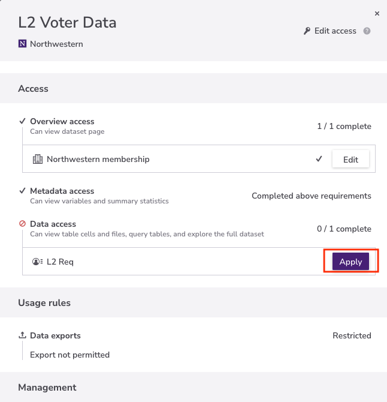

L2 VM2 Uniform#
At a Glance#
Provider |
L2 Political (L2, Inc.) |
Coverage |
All 50 US states + DC |
Geographic scope |
United States |
Update frequency |
Periodic (see Redivis version history) |
Access platforms |
Redivis |
Eligible users |
Kellogg faculty, doctoral students, and approved researchers |
Questions |
Description#
L2 VM2 Uniform is a national voter file compiled and standardized by L2 Political , one of the leading voter data vendors in the United States. L2 collects official voter registration records from all 50 states and the District of Columbia, enhances them with commercially sourced consumer and demographic data, and delivers a single harmonized schema — the “VM2 Uniform” format — across all states.
Because different states collect different registration fields, L2 applies statistical models to fill gaps and produce a nationally consistent dataset. Modeled fields are flagged in the data dictionary and should be interpreted accordingly.
The dataset contains approximately 200 million voter records and includes:
Voter registration details — state and county voter IDs, registration date, active/inactive status
Residential and mailing addresses — fully parsed, CASS-standardized, geocoded with latitude/longitude
Demographics — name, gender, age, date of birth, ethnicity, language, place of birth
Political data — registered party, party modeling scores, voting history back to 2000
Consumer/lifestyle data — estimated income, household net worth, home value, education, occupation, interests, investments
Household composition — household size, children’s ages, generational makeup
Geographic identifiers — census tract/block, congressional district, state legislative district, school district, and hundreds of specialized districts
FEC donation history — federal campaign donation counts, amounts, and dates
Access#
The L2 VM2 Uniform dataset is available on Redivis under the Northwestern organization. Access requires two steps beyond a standard Northwestern Redivis login:
Step 1 — Apply for data access#
On the dataset page in Redivis, open the Access panel. You will see that Data access (the ability to query tables) shows “0 / 1 complete”. Click Apply next to the L2 Req requirement.
{kind=link}

Step 2 — Sign the Data Use Agreement with your initials#
After clicking Apply, the L2 Req application form opens. Read each of the four required statements and enter your initials in the field next to each one:
The L2 Current Voter List is solely for the purposes of non-profit academic research and education.
You will not transfer L2 data in whole or in part to any third parties (including AI APIs) without prior written permission of L2.
All research papers and publications based on L2 data will contain a public acknowledgment of L2.
Any personal information in the L2 data is for the limited purpose of academic research and education.
Once all four fields are initialled, click Submit. Your application will be reviewed by a Northwestern administrator.
{kind=link}
Access is granted after administrator review. Access automatically expires after one year and may be renewed by repeating this process.
For questions or to expedite access, contact Kellogg Research Support .
Important
The VM2 Uniform dataset contains sensitive personal information including names, addresses, birth dates, phone numbers, and political affiliation. Use of this data is subject to L2’s data licensing terms. Do not share raw records or derived identifying information outside your approved research project.
Schema#
On Redivis, the L2 VM2 Uniform data is organized as one table per state, named using the two-letter state abbreviation followed by _Uniform — for example AK_Uniform, AL_Uniform, AR_Uniform, … WY_Uniform. Each table has the same ~800-column schema. To work with multiple states, use UNION ALL across the relevant state tables (see the multi-state query example below).
Field definitions, value codes, and modeled-data flags are provided in the full data dictionary:
Key Field Groups#
Voter Identity & Registration
Field |
Description |
|---|---|
|
Permanent unique voter ID assigned by L2 (primary key) |
|
State-issued voter registration ID |
|
County-issued voter ID (where available) |
|
First name |
|
Middle name |
|
Last name |
|
Name suffix (Jr., Sr., etc.) |
|
Active/inactive registration status ( |
|
Registration date as calculated by L2 |
|
Registration date as reported by the state |
|
Absentee/mail ballot type |
|
Registered party (text) |
|
Whether the voter has changed party registration |
Address & Geocoding
Field |
Description |
|---|---|
|
Full residential address string |
|
City |
|
State (2-letter) |
|
5-digit ZIP code |
|
ZIP+4 |
|
Census tract |
|
Census block |
|
Latitude (decimal degrees) |
|
Longitude (decimal degrees) |
|
Geocoding accuracy code (see codebook) |
|
Property type (single-family, condo, etc.) |
|
Mailing address (if different from residence) |
|
Mailing city |
|
Mailing state |
|
Mailing ZIP |
Demographics
Field |
Description |
|---|---|
|
Gender (M / F / U) |
|
Age in years |
|
Date of birth (YYYYMMDD) |
|
Confidence level of birth date |
|
State or country of birth |
|
Ethnic description (modeled) |
|
Broad ethnic group (modeled) |
|
L2 ethnic code (see codebook) |
|
Likely primary language (modeled) |
|
Marital status (modeled) |
|
Education level (modeled) |
Political Scores & Voting History
Voting history fields are named General_YYYY, Primary_YYYY, and PresidentialPrimary_YYYY. Values are Y (voted) or null (no record). History extends back to 2000.
Field |
Description |
|---|---|
|
Voted in 2024 general election |
|
Voted in 2024 primary |
|
Voted in 2024 presidential primary |
|
Voted in 2022 general election |
|
Voted in 2020 general election |
|
Voted in 2020 presidential primary |
|
Voted in 2016 general election |
… |
History available back to 2000 |
|
Model score: progressive Democrat propensity |
|
Model score: moderate Democrat propensity |
|
Model score: moderate Republican propensity |
|
Model score: conservative Republican propensity |
Consumer & Financial Data
Field |
Description |
|---|---|
|
Estimated household income (modeled) |
|
Estimated net worth (modeled) |
|
Area median household income |
|
Income decile within state (modeled) |
|
Estimated current home value range |
|
Probability of homeownership (modeled) |
|
Active investor indicator (modeled) |
|
General investment interest indicator |
|
Real estate investment interest |
|
Total federal political donation amount |
|
Number of federal donations |
|
Average federal donation amount |
|
Date of most recent federal donation |
|
Business owner indicator (modeled) |
|
Occupation code (see codebook) |
Household Composition
Field |
Description |
|---|---|
|
Number of persons in household |
|
Number of adults in household |
|
Number of children in household |
|
Presence of children indicator |
|
Senior adult (65+) in household |
|
Veteran in household |
|
Number of generations in household |
|
Household gender composition |
|
Household party composition |
|
Number of registered voters in household |
Geographic & Political Districts
The dataset includes hundreds of district-level fields. Key ones include:
Field |
Description |
|---|---|
|
FIPS county code |
|
County name |
|
US House district |
|
State senate district |
|
State house/assembly district |
|
Voting precinct |
|
School district |
|
City/municipality |
|
2010 redistricting congressional district |
|
2024 proposed congressional district |
Additional district fields cover judicial districts, special districts, utility districts, and more. See the data dictionary for the full list.
Example Queries#
The following SQL examples use Illinois (IL_Uniform) as the example state table. Replace IL_Uniform with the state table you need (e.g., CA_Uniform, NY_Uniform). To query multiple states, use UNION ALL as shown in the multi-state example below.
Count registered voters by party in a single state#
SELECT
Parties_Description AS party,
COUNT(*) AS voter_count
FROM IL_Uniform -- replace with your target state table
WHERE Voters_Active = 'A'
GROUP BY 1
ORDER BY 2 DESC;
Combine multiple states with UNION ALL#
SELECT
'IL' AS state, Parties_Description AS party, COUNT(*) AS voter_count
FROM IL_Uniform
WHERE Voters_Active = 'A'
GROUP BY 1, 2
UNION ALL
SELECT
'IN' AS state, Parties_Description AS party, COUNT(*) AS voter_count
FROM IN_Uniform
WHERE Voters_Active = 'A'
GROUP BY 1, 2
ORDER BY 1, 3 DESC;
Voter turnout rate in 2024 general election#
SELECT
COUNT(*) AS registered_voters,
COUNTIF(General_2024 = 'Y') AS voted_2024,
ROUND(COUNTIF(General_2024 = 'Y') / COUNT(*), 4) AS turnout_rate
FROM IL_Uniform -- replace with your target state table
WHERE Voters_Active = 'A';
Identify consistent general-election voters (voted in all elections 2016–2024)#
SELECT
LALVOTERID,
Voters_FirstName,
Voters_LastName,
Parties_Description
FROM IL_Uniform -- replace with your target state table
WHERE
Voters_Active = 'A'
AND General_2024 = 'Y'
AND General_2022 = 'Y'
AND General_2020 = 'Y'
AND General_2018 = 'Y'
AND General_2016 = 'Y';
Registered voters who did not vote in the last three general elections (2020, 2022, 2024)#
SELECT
LALVOTERID,
Voters_FirstName,
Voters_LastName,
Parties_Description,
Voters_Age
FROM IL_Uniform -- replace with your target state table
WHERE
Voters_Active = 'A'
AND General_2024 IS NULL
AND General_2022 IS NULL
AND General_2020 IS NULL;
Age and income distribution of Democratic primary voters in Illinois#
SELECT
CASE
WHEN CAST(Voters_Age AS INT64) BETWEEN 18 AND 29 THEN '18-29'
WHEN CAST(Voters_Age AS INT64) BETWEEN 30 AND 44 THEN '30-44'
WHEN CAST(Voters_Age AS INT64) BETWEEN 45 AND 64 THEN '45-64'
WHEN CAST(Voters_Age AS INT64) >= 65 THEN '65+'
ELSE 'Unknown'
END AS age_group,
ConsumerData_Estimated_Income_Amount AS income_range,
COUNT(*) AS voter_count
FROM IL_Uniform
WHERE
Parties_Description = 'Democratic'
AND Primary_2024 = 'Y'
GROUP BY 1, 2
ORDER BY 1, 3 DESC;
Households with multiple registered voters and their party mix#
SELECT
Residence_Addresses_AddressLine,
Residence_Addresses_City,
Residence_HHParties_Description AS household_party_mix,
Residence_Families_HHVotersCount AS voters_in_household
FROM IL_Uniform
WHERE
Voters_Active = 'A'
AND Residence_Families_HHVotersCount > 1
LIMIT 500;
Geocoded voter locations for mapping (sample)#
SELECT
LALVOTERID,
CAST(Residence_Addresses_Latitude AS FLOAT64) AS lat,
CAST(Residence_Addresses_Longitude AS FLOAT64) AS lon,
Residence_Addresses_CensusTract,
Residence_Addresses_CensusBlock,
Parties_Description
FROM IL_Uniform
WHERE
Residence_Addresses_LatLongAccuracy IN ('1', '2', '3') -- high-accuracy geocodes
AND Voters_Active = 'A'
LIMIT 10000;
Federal political donors with total giving over $1,000#
SELECT
LALVOTERID,
Voters_FirstName,
Voters_LastName,
Parties_Description,
CAST(FECDonors_TotalDonationsAmount AS FLOAT64) AS total_donated,
FECDonors_NumberOfDonations AS num_donations,
FECDonors_LastDonationDate
FROM IL_Uniform
WHERE
FECDonors_TotalDonationsAmount IS NOT NULL
AND CAST(FECDonors_TotalDonationsAmount AS FLOAT64) > 1000
ORDER BY total_donated DESC
LIMIT 1000;
Notes on Modeled Data#
Many fields in the VM2 Uniform dataset are statistically modeled rather than directly observed from voter registration records. These include ethnicity estimates, income, net worth, education, occupation, party propensity scores, and most ConsumerData_* fields. Modeled fields are flagged in the data dictionary (Modeled Data? column = Y).
When using modeled fields in research:
Report that the variable is model-estimated, not administrative data
Validate against known benchmarks where possible
Be aware that model accuracy varies by state and demographic group
Linking to Other Datasets#
Dataset |
Linkage approach |
|---|---|
Census / ACS |
Via |
FEC individual contributions |
|
Other voter files |
Match on |
For linkage assistance, contact rs@kellogg.northwestern.edu .